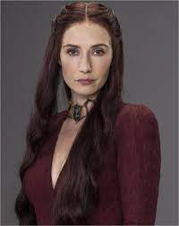
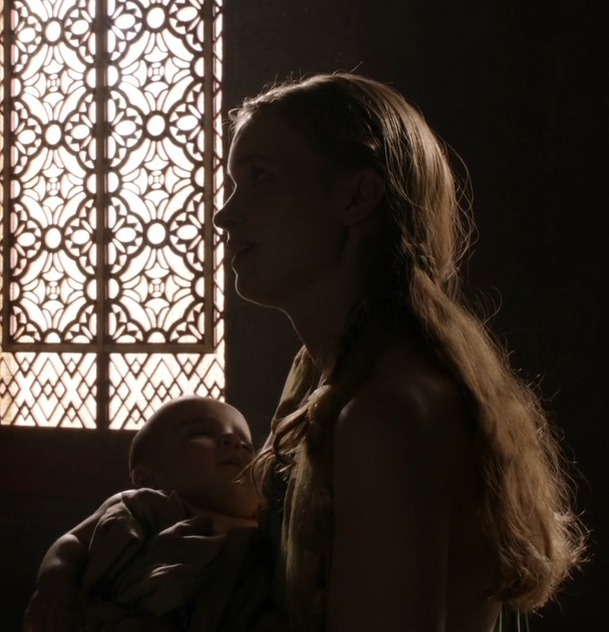

Antigua residencia de la Casa Durrandon, los antiguos Reyes de la Tormenta, Bastión de Tormentas es actualmente uno de los asentamientos principales de la Casa Baratheon, la más joven de las casas nobles. Situada en el extremo de la costa, se puede acceder hacia la Bahía de los Naufragios a través de un acceso al mar.
Casa Baratheon
Lema: Nuestra es la furia (Ours is the Fury)
Ubicación: Storm's End (Bastión de Tormentas)

El origen de la casa se remonta a la Guerra de la Conquista, cuando Aegon el Conquistador llegó desde Rocadragón para hacerse con todo Poniente. Cedió Bastión de Tormentas a Orys Baratheon, quien supuestamente había asesinado al último Rey Tormenta, Argilac el Arrogante, como muestra de agradecimiento.

Robert Baratheon: Es el Rey de los Siete Reinos desde la victoria en la Guerra del Usurpador, también conocida como Rebelión de Robert, después de la cual contrae matrimonio con Cersei para unir los reinos con la casa Lannister. Muere atacado por un jabalí estando borracho y dejando la corona en su psicópata hijo Joffrey

Stannis Baratheon: Tras la muerte de su hermano, Robert, Stannis se proclama como Rey de los Siete Reinos y declara como traidores a todos aquellos que no lo hagan. Stannis muere ejecutado por Brienne de Tarth

Renly Baratheon: Señor de Bastión de Tormentas y Consejero de Edictos de su hermano mayor el rey Robert Baratheon. Mantiene una relación clandestina con Loras Tyrell. En la víspera de la batalla contra Stannis, Renly es asesinado por una sombra conjurada por la sacerdotisa roja de su hermano, Melisandre, en su tienda a las afueras de Bastión de Tormentas, estando presentes únicamente Catelyn Tully y Brienne Tarth.

Selyse Florent: Esposa de Stannis Baratheon y autoproclamada Reina de los Siete Reinos. Se suicida ahorcándose después de contemplar como su hija Shireen era quemada en la hoguera por orden de Stannis

Shireen Baratheon: Es la única hija del rey Stannis Baratheon y Selyse Florent. Padece una enfermedad que en la obra es calificada como psoriagrís, la cual hace que la piel adquiera un aspecto escamoso y pétreo. Es quemada en la hoguera a manos de Melisandre con el consentimiento de su padre Stannis, debido a que Melisandre afirmó que era un sacrificio necesario si quería vencer en la guerra.

Melisandre: Conocida como la Mujer Roja, Sacerdotisa del Señor de la Luz, consejera de Stannis Baratheon en su lucha por el trono. Luego de que Arya apuñaló y destruyó al "Rey de la Noche" para terminar la guerra, Melisandre se sacó el collar que mantenía su juventud y caminó por la nieve como una anciana hasta que se desvanece y muere.

Davos Seaworth: Contrabandista, pero se convirtió en caballero hacendado y en el consejero más leal de Stannis Baratheon. Siempre se mostró contra Melisandre, la sacerdotisa en la que Stannis y su esposa confiaban ciegamente. Luego de la masacre en Desembarco del Rey es nombrado Maestro de Barcos por el nuevo Rey

Brienne de Tarth: Se destaca por tener unos rasgos anormalmente masculinos: muy alta, musculosa, pecho plano y ancho, pelo pajizo. Es una espadachina excelente, reconociendo esto caballeros como Jaime Lannister o Renly Baratheon, que supieron ver su destreza más allá de su poco agraciado aspecto femenino. Brienne asiste a Renly en todo momento y se convierte en su guardaespaldas más próximo.

Barra fue una hija bastarda que tuvo el rey Robert con una prostituta de un burdel de Desembarco del Rey. La reina Cersei elimina a todos los hijos bastardos de Robert para evitar que supongan un peligro al reinado de su hijo, de modo que Barra es asesinada por un Capa Dorada enviado por Janos Slynt.